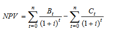

An engineering project involves the transformation of limited resources into valuable final products or outputs. The engineer must be concerned not only with the technical feasibility of the project but also the economic feasibility.
See Quizzes on Black Board.
Economic evaluation is aimed at assessing whether the value of the final products exceeds the value of the resources used by the project. The values of the outputs when measured in economic terms are called the benefits of the project. Similarly the values of the resources used in its construction and maintenance when measured in economic terms are called the costs of the project.
In the private sector, benefits and costs are measured by cash flows into and out of the firm, respectively. That is, a conceptual boundary is drawn around the firm and benefits and costs are represented by cash flows across this boundary.
For public sector projects, benefits and costs must be considered for society as a whole. In this case, benefits and costs are not necessarily associated with cash flows. For example, the benefits of a public transport system are not necessarily measured by the revenue which it generates. The government may choose to run the system at a loss for social or environmental reasons. In this case the benefits to the users of the system would probably exceed the revenue generated by it. If, for example, public transport were offered free of charge, few people would argue that the benefits to society were zero.
The costs and benefits (or revenue) of an engineering project usually occur over a long time period. In carrying out an economic evaluation of such a project, it must be recognized that benefits or costs incurred in ten years cannot be directly compared with those incurred in the current year. Given the choice between $1000 now and $1000 in 10 years, very few people would choose the latter. In the first place, the effects of inflation are such that fewer goods and services could be purchased with the future sum than at present. However, even in the absence of inflation, human nature is such that there is a preference to consume goods now rather than later, and to postpone costs if possible. Therefore, in carrying out economic evaluation, it is necessary to discount future benefits and costs in order to make them directly comparable with benefits and costs incurred now. This is carried out using discounting formulae derived from considerations of compound interest.
In all the economic calculations that follow, there are two basic assumptions:
If a sum of money P is invested for one year at an interest rate of i, then after one
year the value will be:
F=P(1+i)
where F is the future sum and P the present sum. For example, $100 invested at a
interest rate of 5 percent per annum (i = 0.05) for one year would yield $105 at the
end of the year. If that money is invested for a second year, then the value becomes:
F=P(1+i)(1+i) = P(1+i)2
After two years the initial $100 yields $110.25. After a period of n years it can
be shown that the basic formula to calculate the future worth of a sum of money can
be written as:
F=P(1+i)n
where F is the future sum, P the present sum, i the interest rate and n the number of
years (or to be more precise, the number of time periods over which the interest is paid).
By rearranging the above equation, it is possible to see how much must be
deposited today to yield a certain sum of money after a given period:
P=F ÷ (1+i)n
where P is the present value of a lump sum of F, to be paid in n years.
Inflation is represented by a rising general level of prices. It is important to note that during an inflationary period the prices of all goods and services are not necessarily rising nor are all prices necessarily rising at the same rate. The effect of inflation is that a dollar next year will buy less than a dollar today. It is important to distinguish clearly between the concepts of inflation and the time value of money. Even in the absence of inflation, very few people would be prepared to lend money at zero interest. As most people would prefer to consume goods and services now rather than later, there is clearly a real time value of money. In times of inflation, lenders expect a real rate of return on their money which exceeds the inflation rate.
Various economic criteria have been proposed for use in comparing engineering projects. The following criteria are described briefly and compared:
The payback period is defined as the time it takes for the project to generate sufficient net benefits to cover its initial cost of construction and implementation.
The net present value (NPV) of a project is defined as the present value of all
benefits minus the present value of all costs. It can be written as:
NVP=PVB-PVC
where PVB is the Present Value of Benefits and PVC is the Present Value of Costs.
By using the formulae for PVB and PVC we can write:

where Bt is the benefit in year t, Ct is the cost in year t,
i is the discount (or interest) rate and n is the life of the project (years). The
calculation of NPV therefore involves discounting all costs and benefits back to the present time
to allow them to be compared at the same point in time.
Most economists advocate NPV as the most appropriate criterion for comparing projects. It measures the net gain to society (or the company) of the proposed project. It can be used in any decision-making context. In the case of a go or no-go decision, the choice is independent of the criterion used. However, in choosing a single project from a list of mutually exclusive projects, NPV appears to favour large projects.
The benefit-cost ratio (B/C) is widely used for evaluating projects in the public
sector. As normally defined, it is the present value of all benefits divided by the
present value of all costs:
B/C = PVB ÷ PVC
where PVB is the Present Value of Benefits and PVC is the Present Value of Costs.
The benefit-cost ratio has been used extensively in a number of countries for comparison of projects of various sizes. It has some degree of appeal when used in the context of allocating scarce capital funds, i.e., capital budgeting. However, there is some ambiguity in its definition for projects with high recurrent costs (e.g., operating, maintenance, and repair costs). The basic issue here is whether the present value of recurrent costs should be treated as negative benefits and deducted from the numerator of the B/C ratio, or treated as costs and added to the denominator. A different value of B/C ratio will result in each case.
There are three basic types of decisions requiring economic evaluation. They are:
In deciding whether or not an individual project is justified on economic grounds,
any one of the following criteria may be applied:
NVP> 0 or B/C > 1
Only one of these needs to be looked at since they will all lead to the same decision.
Often economic decisions are used to choose from a number of different options where only one will be chosen. For example, what sort of car to buy, or which laptop computer to purchase. In each case, one will be chosen in preference to the others.
It will be the case for most organisations that the cost of the full list of desirable projects exceeds the available funds and a choice has to be made regarding which projects will proceed in the current budget round and which will not.
When making a capital budgeting decision based on the use of the benefit cost ratio, the general procedure is to rank the projects from best to worst in terms of the criterion. Projects are then chosen from the top down until the budget is exhausted.